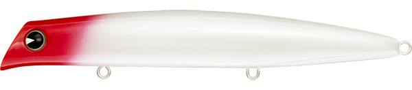
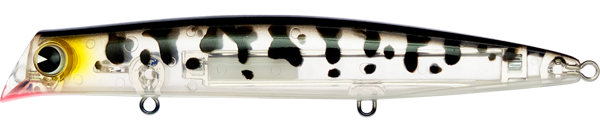

KOMOMO SF-125
シーバス界の名作ルアー”コモモ125F”。
コモモはシャローランナーの先駆者で、シーバスの捕食レンジであるシャロー帯で最強の使いやすさを誇っています。
コモモはシャローランナーの先駆者で、シーバスの捕食レンジであるシャロー帯で最強の使いやすさを誇っています。

- メーカー
- COREMAN
（コアマン） - 長さ
- 95mm
- 重さ
- 16g
- タイプ
- ジグヘッド＋ワーム
- アクション
- バイブレーション
- ターゲット
魚種 - シーバス
- 開発者
- 泉 裕文
VJ16の特徴・コンセプト
VJ16は、COREMANの代表ルアーで、シーバス界でエサより釣れると人気のルアーです。 VJはバイブレーションジグヘッドの略で、バイブレーションしながら、ワームのしっぽを揺らしながら誘います。
-
超低速巻きでもなめらかなアクション
超低速でも破綻しないアクションで潮の動きがないゆっくりな流れでの中でも違和感なくアピールして釣れる！
-
安定した飛距離と着水後の動き出し抜群
imaのルアー構造MRDを搭載しており、いどうじゅうしんで飛距離がよく、飛行姿勢も安定。着水後はすぐに動ける設計です。
-
シャローレンジ(0-50cm)のコントロールが可能
シーバスの捕食が多い水面～シャローの難しいレンジをロッドの向きで簡単にレンジコントロールできます。
KOMOMOの使い方・得意な状況
ワンポイント
人気カラー

レッドヘッドパール
ナイトゲームでのアピールが良い定番のレッドヘッド。

マットチャート
ナイトゲームでは定番カラー。
 玉彩
玉彩
imaの代表ルアー。アピールも強く視認性も良い釣れるカラー

コーチドッククリア
最近定番化されつつある期待カラー。クリアカラーはベイトサイズがマッチしてなくても釣れる！
画像出典:ima公式HP
使用インプレッション
KOMOMOシリーズ
KOMOMOのサイズラインナップはこちら。
- KOMOMO85
- KOMOMO110
- KOMOMO125
- KOMOMO155
- KOMOMOCOUNTER